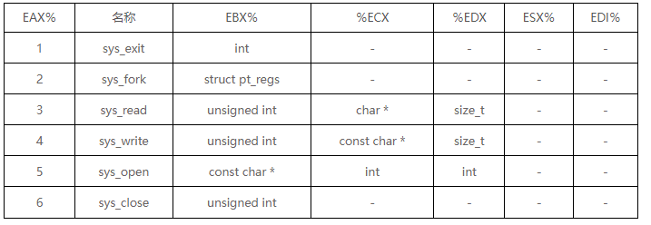

W
# linux 系统调用
# 系统调用是用于用户空间和内核空间之间接口的 API
# linux 中使用系统调用
可以在 linux 中使用系统调用，具体有一下步骤
- 将系统调用号放在 EAX 寄存器中
- 将参数存储在寄存器 EBX,ECX 等中的系统调用中
- 调用相关的中断 (80h)
- 结果通常在 EAX 寄存器中返回
由六个寄存器存储所使用的系统调用的参数
分别是 EBX,ECX,EDX,ESI,EDI 和 EBP
这些寄存器采用连续参数，从 EBX 寄存器开始，如果有超过六个参数，则第一个参数的存储单元存储在 EBX 寄存器中
下面举出系统调用 sys_exit 以及 sys_write 的例子
mov eax,1 ;system call number (sys_exit)
int 0x80 ; call kernel
mov eax,4 ; message length
mov ecx,msg ; message to write
mov ebx,1 ; file descriptor (stdout)
mov eax,4 ; system call number (sys_write)
int 0x80 ; call kernel
所有系统调用都列在 /user/include/asm/unistd.h 以及他们的编号（在调用 int 0x80 之前放入 eax 的值）
常用的系统调用以及编号如下
